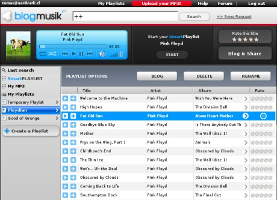
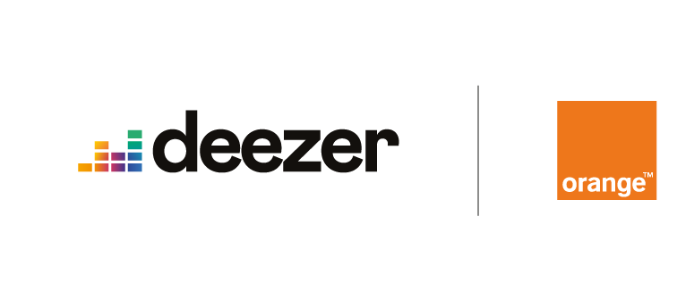
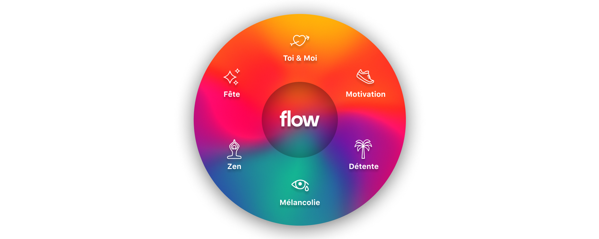
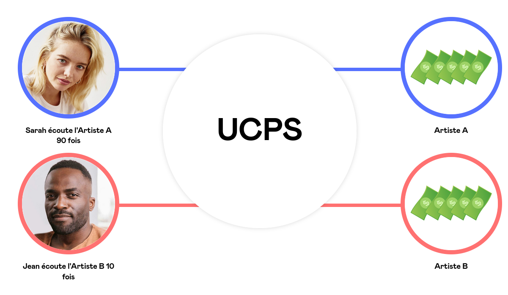
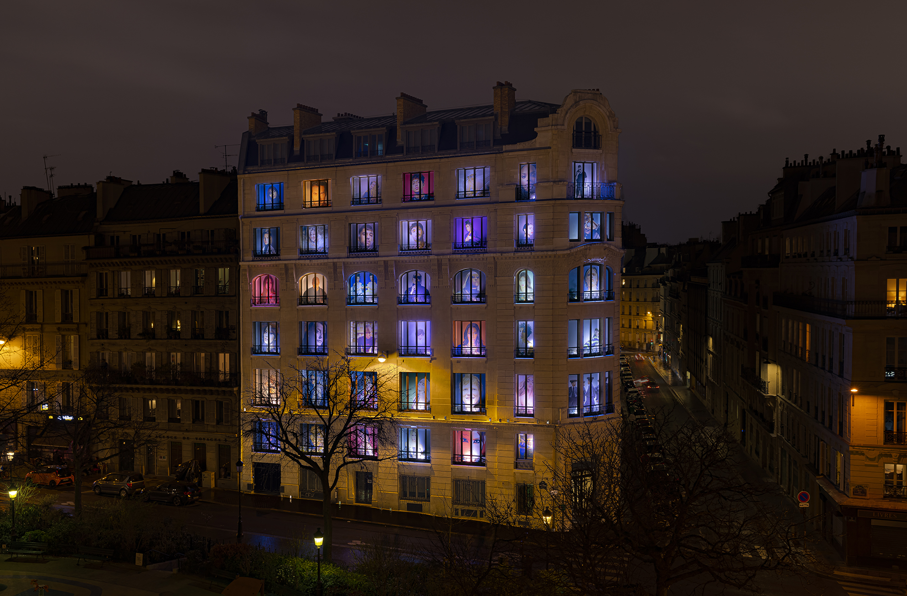

2005
2006
2007
2009
2010
2012
2013
2014
2015
2016
2017
2018
2019
2020
2021
Daniel Marhely
Après avoir fini quitté ses études a 16 ans Daniel Marhely a créé en 2005 son premier site nommé lovelee.com.
Blogmusik.net
Grace a cette experience Daniel s’associe avec Jonathan Amouyal pour créer la société Alyza Media et lancer en 2006 Blogmusik.net.
Ce site a pour but de distribué de la musique gratuitement en ligne. Ce site est fermé en 2007 suite a des pression faite par la SACEM qui dénonce le non droit d'auteur.

La création de deezer
Daniel Marhely et Jonathan Amouyal créent Deezer le 22 aout 2007. C'est le premier site français de musique qui a réussi à fonctionner en accord avec une société de gestion des droits d'auteur : la SACEM.
L'adpation de Deezer
Avec sa popularité grandissante Deezer change son model économique et ajoute en 2009 une option d'abonement afin d'avoir la musique sans publicité et avec une meilleur qualité.
L'arrivé des contrat
En 2010 Deezer devient partenaire de Orange. Avec ce partenariat Orange inclut Deezer Premium à ses offres haut de gamme.
Deezer a aussi des plus petit contrat avec d'autre enseigne comme un contrat de diffusion avec McDonald's en 2009

l'expension de Deezer
Deezer est de plus en plus connu a travers le monde. Il est, en 2012 présent dans toute l'europe, l'Australie, en Amerique du sud, 6 pays de l'Asie, etc.
Le site compte aussi 21 partenariats avec des opérateurs téléphoniques.
La mondialisation complete
Deezer fini son expension en 2013 et devient disponible partout dans le monde.
Les nouvelle Fonctionalités
En 2014 Deezer inclut sa nouvelle Fonctionalité signature : la playsite Flow qui est une playliste personalisé pour chaque utilisateurs.
C'est aussi l'anné ou Deezer propose pour la premiere fois une version HIFI.

L'arrivé de contenu plus varié
En plus de la musique Deezer inclus des podcasts a son catalogue.
BMW devient partenaire de Deezer.
L'elargissement des offres
Deezer lance son offre Deezer Famille en plus des autre offres.
Access Industries et Orange deviennent les actionaires principaux.
La mise en avant des petits artistes
Deezer lance le programme Deezer NEXT qui soutient les artistes émergents et Deezer lance aussi des initiatives sur le systeme de rémunération UCPS.
SongCatcher est aussi introduit sur Deezer il permet l'intégration de commande vocal avec Google Home.

La licorne
Deezer est évaluer a 1 millards de d'euro et rejoint les licornes frnaçaise.
Le changement d'image
En 2019 Deezer change de logo pour le remettre au gout du jour.
Deezer rejoint NEXT40.
Et la Fonctionalité spleeter est ajouter a Deezer.
Le changement de siege
Deezer déplace son siege a Paris.
Les podcasts ont désormaient un onglet dédier.

Le nouveau ceo
Deezer nomme un nouveau CEO : Jeronimo Folgueira
Les podcasts ont désormaient un onglet dédier.